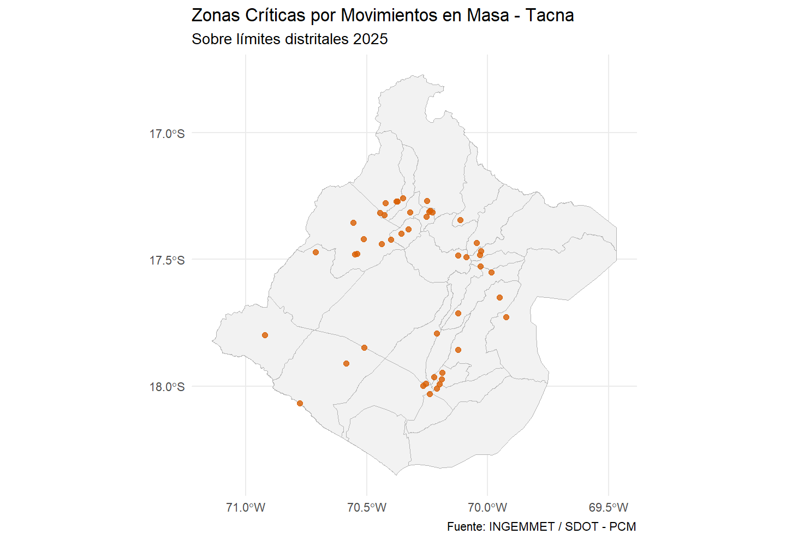

Peligros Naturales, Riesgos de Desastres y Catastro Rural
Paul Efren Santos Andrade
2026-11-25
Source:vignettes/peligros-riesgos-catastro.Rmd
peligros-riesgos-catastro.RmdIntroducción
El paquete rsdot centraliza 182 archivos
departamentales de gestión de riesgos de desastres y peligros
naturales (ANA, INGEMMET, CENEPRED), además de la capa de catastro rural
(MIDAGRI).
Esta viñeta presenta cómo consultar estas capas mediante las
funciones genéricas (get_peligros(),
get_riesgos()) y sus funciones atajo especializadas:
-
Peligros por inundación:
get_puntos_criticos(),get_tramos_criticos(),get_areas_inundacion(),get_inventario_inundaciones(). -
Peligros por movimientos en masa:
get_zonas_criticas(),get_areas_movimientos_masa(). -
Riesgos de desastres:
get_evaluacion_riesgos(),get_zonas_riesgos_no_mitigable(). -
Catastro rural:
get_catastro_rural().
1. Peligros Naturales
Para explorar los tipos de peligro y departamentos disponibles, se
puede invocar get_peligros() sin argumentos:
Puntos críticos de inundaciones
Los puntos críticos identifican tramos vulnerables de ríos y
quebradas ante desbordes. Podemos descargar directamente un departamento
con get_puntos_criticos():
pc_callao <- get_puntos_criticos(departamento = "CALLAO", show_progress = FALSE)
nrow(pc_callao)
#> [1] 10
pc_callao |>
st_drop_geometry() |>
select(nom_dist, nomb_rio_q, tip_peligr, familias_e) |>
head(5)
#> # A tibble: 5 × 4
#> nom_dist nomb_rio_q tip_peligr familias_e
#> <chr> <chr> <chr> <dbl>
#> 1 CARMEN DE LA LEGUA REYNOSO RIO RIMAC INUNDACION NA
#> 2 CARMEN DE LA LEGUA REYNOSO RIO RIMAC EROSION FLUVIAL NA
#> 3 CARMEN DE LA LEGUA REYNOSO RIO RIMAC INUNDACION NA
#> 4 CARMEN DE LA LEGUA REYNOSO RIO RIMAC EROSION FLUVIAL NA
#> 5 CARMEN DE LA LEGUA REYNOSO RIO RIMAC INUNDACION NAZonas críticas por movimientos en masa
zc_tacna <- get_zonas_criticas(departamento = "TACNA", show_progress = FALSE)
nrow(zc_tacna)
#> [1] 46
lim_tacna <- get_distritos_2025(departamento = "TACNA", show_progress = FALSE)
ggplot() +
geom_sf(data = lim_tacna, fill = "grey95", color = "grey70", linewidth = 0.3) +
geom_sf(data = zc_tacna, color = "#d95f02", size = 1.8, alpha = 0.8) +
theme_minimal() +
labs(
title = "Zonas Críticas por Movimientos en Masa - Tacna",
subtitle = "Sobre límites distritales 2025",
caption = "Fuente: INGEMMET / SDOT - PCM"
)
plot of chunk plot-peligros
2. Riesgos de Desastres
Las capas de riesgos cubren las evaluaciones de riesgo
(get_evaluacion_riesgos(), disponible en los 25
departamentos) y las zonas declaradas de riesgo no mitigable
(get_zonas_riesgos_no_mitigable(), disponible en 9
departamentos).
# Listar departamentos con zonas de riesgo no mitigable
get_zonas_riesgos_no_mitigable()
# Descargar evaluación de riesgos para Callao
evar_callao <- get_evaluacion_riesgos(departamento = "CALLAO", show_progress = FALSE)
nrow(evar_callao)
#> [1] 413. Catastro Rural (MIDAGRI)
La función get_catastro_rural() permite consultar los
predios rurales catastrados por departamento (disponible en modo
local/staging mientras se completa su publicación en OSF):
# Consultar departamentos disponibles en staging local
options(rsdot.use_staging = TRUE)
get_catastro_rural()